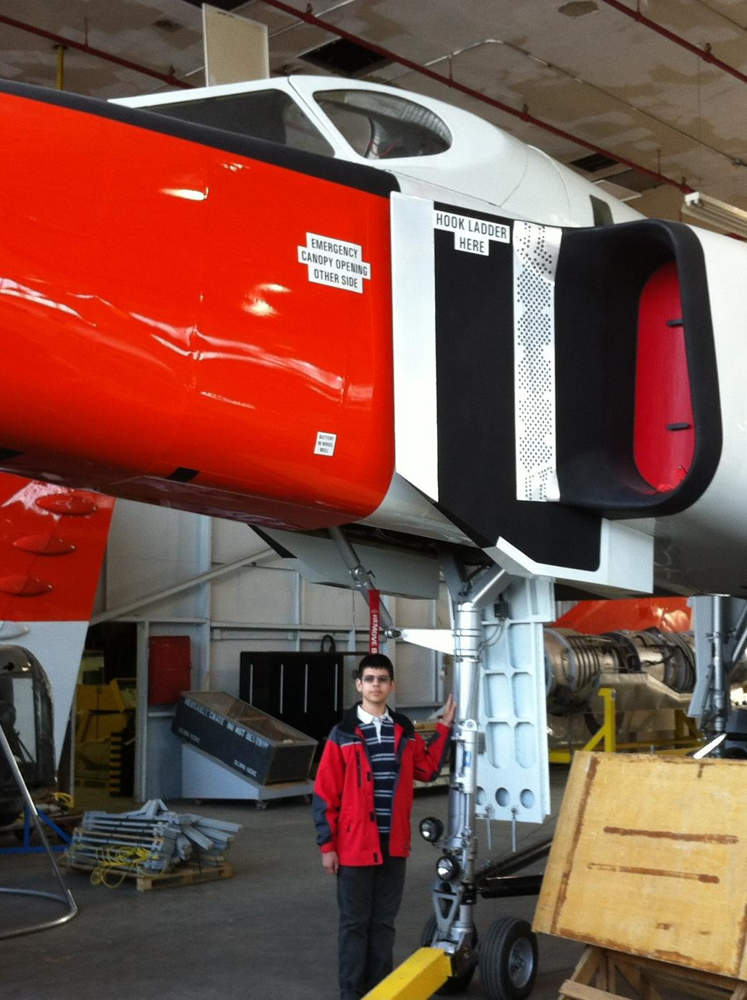

My name is Andrew Ilersich. I am a second year undergraduate student at the Faculty of Applied Science and Engineering at the University of Toronto. I am planning on specializing in aerospace engineering, and if all goes well, I'll continue in graduate studies. I am experienced with programming in Python, Java, C, and Matlab, especially in C and Python. I was a member of the Royal Canadian Air Cadets for three years, achieving the rank of Sergeant. In high school, I had the opportunity to work for Professor Anna Taddio on several vaccination-related studies. I have a long-standing interest in space and aviation, and ideally, I will find myself a career in research in either of those fields.
B.A.Sc. Candidate, Engineering Science, Aerospace Engineering, University of Toronto (GPA 3.6 / 4.0)
Ontario Secondary School Diploma, Ontario Scholar, Abelard Centre for Education
University of Toronto, Space Exploration and Engineering Competition (SEEK), Fourth Place, 2015
University of Toronto, First Year Pong AI Programming Competition, Second Place, 2014
University of Toronto, Engineering Science Entrance Scholarship, $5000, 2014
Abelard Centre for Education, Abelard Gold Medal, Best of graduating class, 2014
Abelard Centre for Education, Academic Honour Roll, Above 90% (2010 – 2012), Above 95% (2012 – 2014)
Canadian Computing Competition, Top 25%, 2012
Royal Canadian Air Cadets, 188 Cobra Squadron, Most Improved Award, 2012
Royal Canadian Air Cadets, 188 Cobra Squadron, Bandsmanship Award, 2011
IBM CASCON High School Programming Competition, Third Place, 2011
Workplace Hazardous Materials Information System (WHMIS II), Certificate of Completion
Tri-Council Policy Statement 2 (Research Ethics), Certificate of Completion